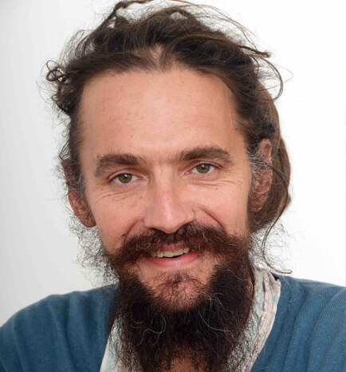

PROFESSOR JAMES MALLINSON
Principal Investigator
James (Jim) Mallinson is the Boden Professor of Sanskrit at the University of Oxford. From 2013–2023 he worked at SOAS University of London where from 2015–2020 he was the Principal Investigator of the Hatha Yoga Project. Professor Mallinson has a BA in Sanskrit and Old Iranian from the University of Oxford (1991), an MA in South Asian Area Studies (with ethnography as its primary subject) from SOAS (1993) and a DPhil. from the University of Oxford (2001). His doctoral thesis was a critical edition of the Khecarīvidyā, an early text on haṭha yoga, and was supervised by Professor Alexis Sanderson. A revised version of the thesis was published by Routledge in 2007.
After completing his doctoral studies Professor Mallinson worked as a principal translator for the Clay Sanskrit Library, for which he produced five volumes of translations of Sanskrit poetry. He has also published translations of two haṭha yoga texts, the Gheraṇḍa Saṃhitā (2004) and Śivasaṃhitā (2007) for YogaVidya.com. In addition to these books Dr Mallinson has published numerous articles, book chapters and encyclopedia articles. Roots of Yoga, a reader of translations of texts on yoga introduced and edited by Professor Mallinson and Dr Mark Singleton was published in the Penguin Classics series in January 2017.
Professor Mallinson’s primary research method is philology, in particular the study of manuscripts of Sanskrit texts on yoga, which he complements with ethnographic data drawn from extensive fieldwork with Indian ascetics and the study of art historical sources. In recognition of his long association with the Rāmānandī Indian ascetic saṃpradāya, in 2013 the order honoured him with the title of mahant, an event recorded in the Smithsonian Channel’s television documentary West Meets East. His work on art historical depictions of yogis led to his being invited to be a consultant and catalogue author for the 2013 exhibition ‘Yoga: The Art of Transformation’ at the Smithsonian Institute in Washington D.C.
Many of Professor Mallinson’s publications may be downloaded from here.